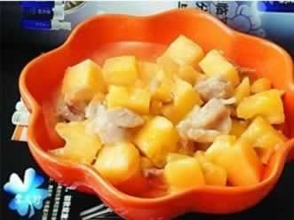
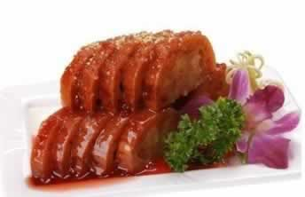

准妈妈可以常吃奶油蛋糕吗？
准妈妈在怀孕期间偶尔吃一两次奶油蛋糕是没有问题的，但如果常吃就不利于健康了。因为蛋糕用的基本都是植物奶油，而植物奶油属于人造奶油，也就是反式脂肪酸，经常食反式脂肪酸对胎儿的发育没有好处。
首先，奶油蛋糕会增加血液中低密度脂蛋白胆固醇的含量，并减少可以预防心脏病的高密度脂蛋白胆固醇的含量，增加心脏疾病患病危险。
另外，准妈妈经常吃奶油蛋糕，还会增加血液黏稠度促使血栓形成，加快动脉粥样硬化，增加糖尿病与乳腺癌的发病率，同时影响胎宝宝的生长发育，对中枢神经系统的发育造成不良影响。
市面上的许多蛋糕为了增加外观吸引力，让色泽更漂亮、口感更细腻，常会存在色素超标、乳化剂超标的现象，过量食用这些添加剂都是对健康有害的。所以，准妈妈食用奶油蛋糕一定要适量少量。
本周推荐尝试食谱1：
菠萝鸡
推荐理由：本菜味道酸甜，酸味能增加胃液分泌、帮助消化、增进食欲，适合孕妇食用。
食谱原料：
去骨鸡腿1只，新鲜菠萝适量，蒜末、青椒、葱末、红甜椒各少许，酱油、白糖适量。
制作方法：
1、鸡腿洗净，切丁，拌入调料腌10分钟，菠萝、青椒、红甜椒切丁备用；
2、热锅入油，爆香葱末，将腌好的鸡腿肉与菠萝、青椒、红甜椒一起放入锅中拌炒，加少许的水，煮至鸡肉熟透即可。
本周推荐尝试食谱2：蜜汁甜藕

推荐理由：鲜藕有养胃滋阴的功效；蜂蜜有润肠的作用，可缓解孕期便秘症状。
食谱原料：
藕750克、糯米150克、蜜莲子25克、蜂蜜50克、白糖200克、湿淀粉15克、蜜桂花5克；
制作方法：
1、将藕洗净，切去一端藕节。将糯米用清水漂洗干净，浸泡2小时，捞起晾干。藕孔内灌入糯米，边灌边用筷子顺孔向内戳，使糯米填孔。从中剖开，切成0．7cm厚的块，整齐摆入碗中，加入白糖125克，再放入笼屉，置旺火上蒸10分钟。
2、入笼屉上火蒸30分钟，取出，再用清水浸泡2分钟，撕去藕皮晾干，切去一端藕节。
3、待糖溶化取出，扣入盘内，再将炒锅置火上，放清水50克，白糖75克，蜂蜜、蜜桂花、蜜莲子烧沸，用调稀的湿淀粉勾荧，起锅浇在藕块上即可。